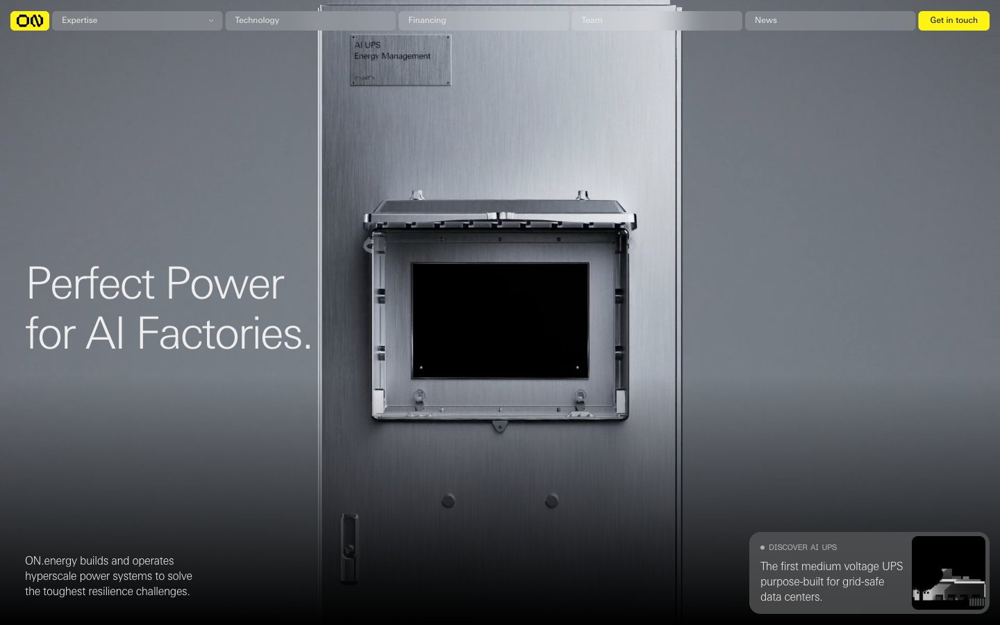

ON.energy 的 Design.md 主题展示，围绕能源运营、工业工具、制造工业、B2B 产品组织页面。
Explore ON.energy's dark AI design system: Midnight Steel #000000, Data Center Graphite #202020 colors, Univers Next Pro typography, and DESIGN.md for AI...

#202020: #202020#000000: #000000#afafaf: #afafaf#eeeeee: #eeeeee#fff313: #fff313#4b4b4b: #4b4b4b#2a2a2a: #2a2a2a#1a1a1a: #1a1a1a#d4a614: #d4a614#b8860b: #b8860b#3a3020: #3a3020#3a4a5a: #3a4a5adisplay: Interbody: Intermono: ui-monospacehints: Inter,ui-monospace